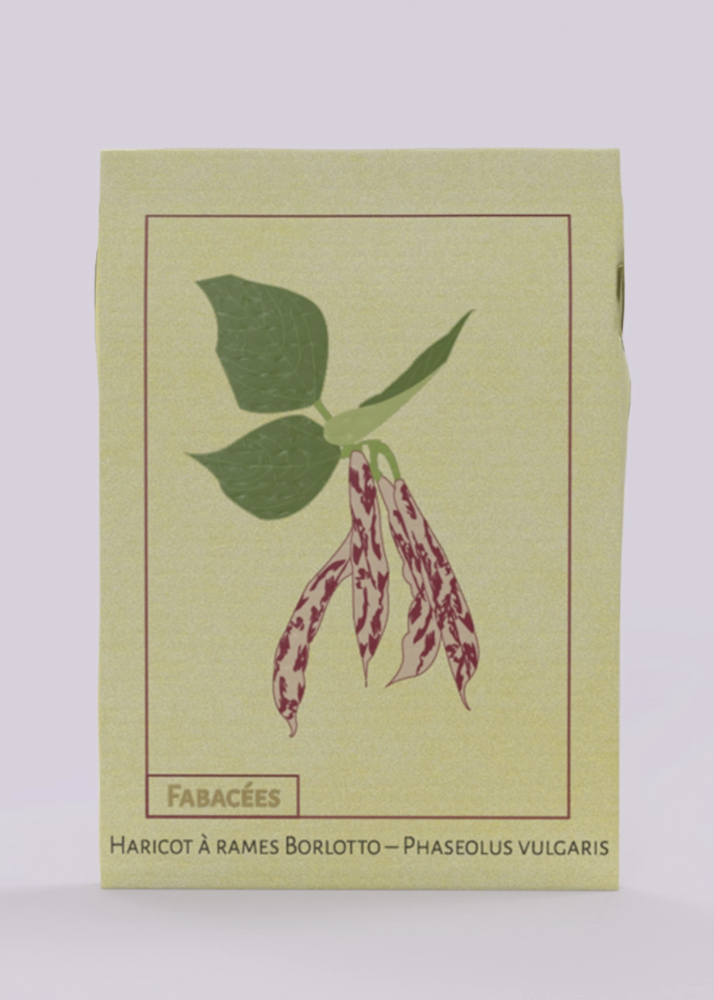
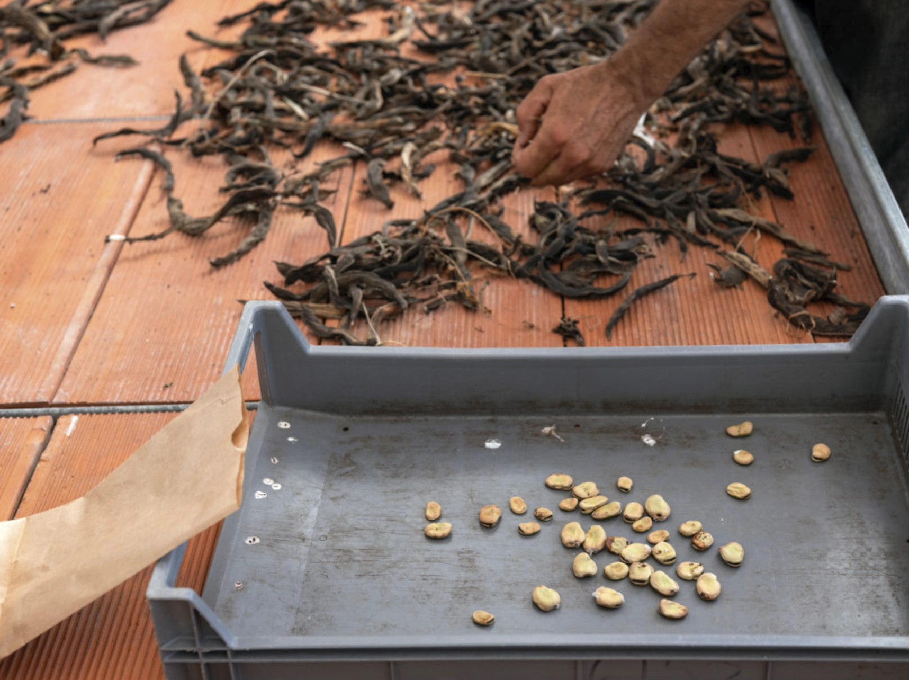

Nos semences
Potimarron orange en forme de toupie au caractéristique goût de châtaigne.
Le plus ancien potimarron débarqué sur le continent.
Cette variété traditionnelle italienne de haricots à écosser aux gousses zébrées de rouge donne une belle récolte de graines de plusieur couleurs.
 Cette variété traditionnelle italienne de haricots à écosser aux gousses zébrées de rouge donne une belle récolte de graines de plusieur couleurs.